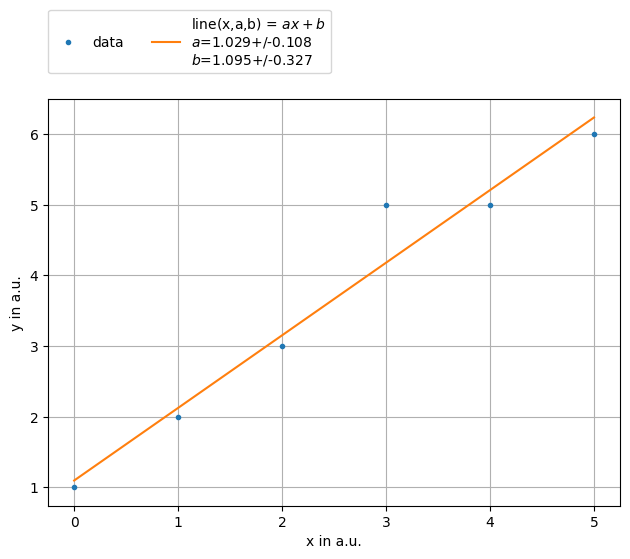

Legend
see: https://stackoverflow.com/a/43439132
[1]:
import numpy as np
from smpl import plot
from smpl import io
from smpl import functions as f
import uncertainties.unumpy as unp
[2]:
data = np.loadtxt(io.find_file('test_linear_data.txt',3))
xdata = data[:,0]
xerr = data[:,2]
ydata = data[:,1]
yerr = data[:,3]
x = unp.uarray(xdata,xerr)
y = unp.uarray(ydata,yerr)
[3]:
data
[3]:
array([[0. , 1. , 0.1, 0.2],
[1. , 2. , 0.2, 0.1],
[2. , 3. , 0.3, 0.1],
[3. , 5. , 0.1, 0.4],
[4. , 5. , 0.1, 0.1],
[5. , 6. , 0.1, 0.2]])
[4]:
ff = plot.fit(xdata, ydata, fmt='.', label='data', lpos=6,bbox_to_anchor=(1.04,0.5),xaxis="x in a.u.",yaxis="y in a.u.",function=f.linear, params=[1])
[5]:
ff = plot.fit(xdata, ydata, fmt='.', lpos=2,bbox_to_anchor=(0,1.02,1,0.2),ncol=3,label='data', xaxis="x in a.u.",yaxis="y in a.u.",function=f.line, params=[1,2])

[ ]:
[ ]:
[ ]:
[ ]: